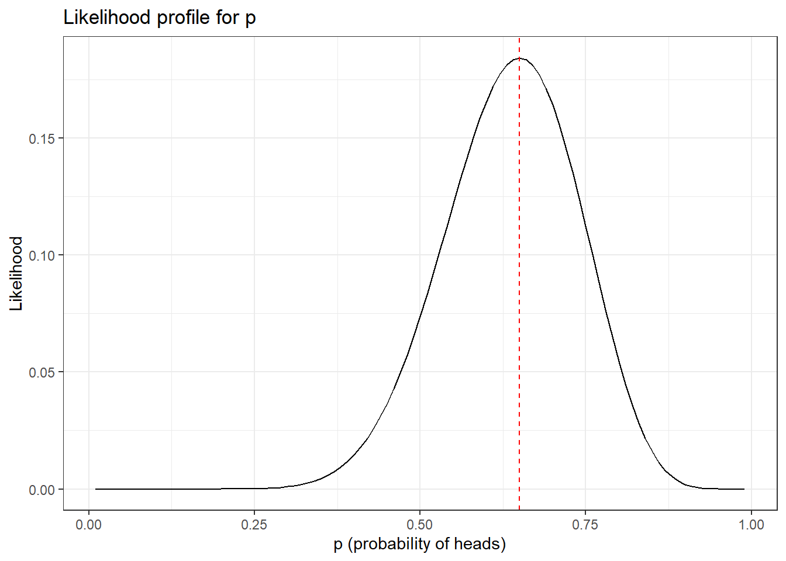
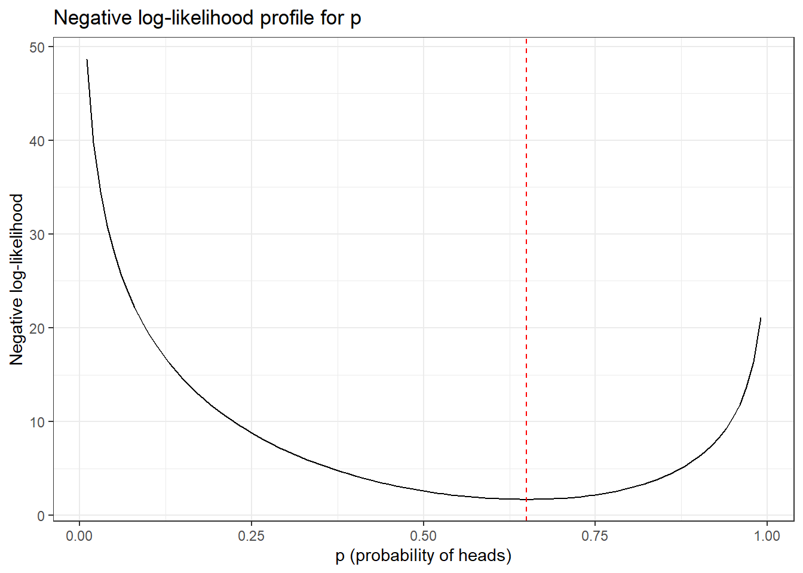
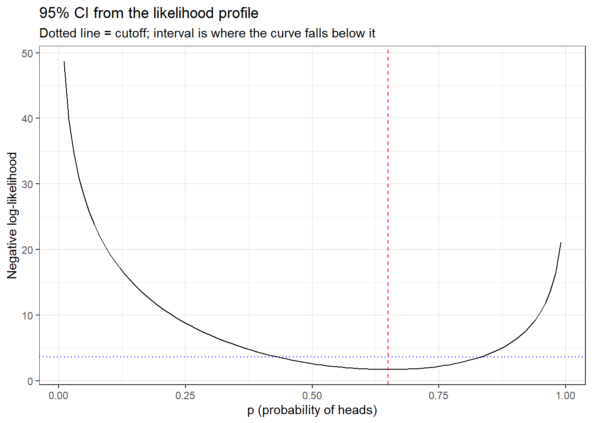

library(tidyverse)
theme_set(theme_bw())
n <- 20
heads <- 13Introduction to Likelihood
What is likelihood?
Suppose we have some data, and a model with one or more unknown parameters. The likelihood of a particular parameter value is the probability of observing the data we actually collected, if that parameter value was the actual value in the population.
\[L(\theta|data) = P(data|\theta)\]
A likelihood asks “given this data, how well does this parameter value explain it?” We can compare the likelihood of the data under different parameter values, and the parameter value that gives the highest likelihood is called the maximum likelihood estimate (MLE): the value that makes the observed data most probable.
Example: estimating a proportion
Suppose we flip a coin 20 times and get 13 heads. We want to estimate \(p\), the probability of heads. We don’t know \(p\); all we know is the data: 20 trials, 13 successes.
The probability model
Each flip is a Bernoulli trial, and the number of heads out of \(n\) independent flips follows a binomial distribution:
\[P(heads = k | n, p) = \binom{n}{k}p^k(1-p)^{n-k}\]
For any candidate value of \(p\), we can plug in our observed data (\(n=20\), \(k=13\)) and calculate how probable that outcome would have been.
R has a built-in function for this, dbinom():
# Likelihood of p = 0.5, given the data
dbinom(x = heads, size = n, prob = 0.5)[1] 0.07392883Grid search
Since there’s only one parameter, we can evaluate the likelihood across a grid of candidate values of \(p\) and see which one is highest. This is a grid search.
p_grid <- tibble(p = seq(0.01, 0.99, by = 0.01)) |>
mutate(likelihood = dbinom(x = heads, size = n, prob = p))
p_grid |>
arrange(desc(likelihood)) |>
slice(1)# A tibble: 1 × 2
p likelihood
<dbl> <dbl>
1 0.65 0.184The likelihood is maximized close to \(p = 13/20 = 0.65\), which makes intuitive sense: the observed proportion of heads is the most likely value of \(p\).
Plotting the likelihood profile
Plotting likelihood against the parameter value is called a likelihood profile. It shows not just the best estimate, but how sharply peaked (informative) the likelihood is.
ggplot(p_grid, aes(x = p, y = likelihood)) +
geom_line() +
geom_vline(xintercept = heads / n, linetype = "dashed", color = "red") +
labs(x = "p (probability of heads)",
y = "Likelihood",
title = "Likelihood profile for p")
Why we use log-likelihood
Likelihoods are products of many small probabilities, so they quickly become tiny numbers that are hard to work with numerically. Taking the log turns products into sums and keeps the numbers manageable. Whatever maximizes \(L(p)\) also maximizes \(\log L(p)\).
We often minimize the negative log-likelihood, because most optimization functions in R (like optim) are built to minimize rather than maximize.
p_grid <- p_grid |>
mutate(negLL = -dbinom(x = heads, size = n, prob = p, log = TRUE))
ggplot(p_grid, aes(x = p, y = negLL)) +
geom_line() +
geom_vline(xintercept = heads / n, linetype = "dashed", color = "red") +
labs(x = "p (probability of heads)",
y = "Negative log-likelihood",
title = "Negative log-likelihood profile for p")
Note that the minimum of the negative log-likelihood curve lines up with the maximum of the likelihood curve above, at \(p=0.65\).
Writing a negative log-likelihood function
Instead of a grid search (which only works well with a few parameters), we usually write an R function that calculates the negative log-likelihood for any parameter value, and hand that function to a numerical optimizer.
binomialNLL <- function(p, k, n) {
negLL <- -dbinom(x = k, size = n, prob = p, log = TRUE)
return(negLL)
}
# Check it gives the same answer as before at p = 0.5
binomialNLL(p = c(p = 0.5), k = heads, n = n)[1] 2.604652Minimizing the negative log-likelihood
Now we hand this function to optim(), giving it a starting guess for \(p\).
fit <- optim(par = c(p = 0.5),
fn = binomialNLL,
k = heads,
n = n,
method = "Brent",
lower = 0.001,
upper = 0.999)
fit$par
[1] 0.65
$value
[1] 1.690642
$counts
function gradient
NA NA
$convergence
[1] 0
$message
NULLoptim() finds \(\hat p \approx 0.65\), matching both the grid search and the analytical answer, \(\hat p = k/n = 13/20 = 0.65\).
Confidence intervals from the likelihood profile
The shape of the likelihood profile tells us how precise that estimate is. A sharply peaked profile means only a narrow range of \(p\) values fit the data well, while a flat profile means many values fit almost equally well.
We can turn this into a formal confidence interval using the likelihood ratio test. For a single parameter, the theory says that twice the difference between the maximum log-likelihood and the log-likelihood at any other value of \(p\) is approximately chi-squared distributed with 1 degree of freedom:
\[2\left[\log L(\hat p) - \log L(p)\right] \sim \chi^2_{1}\]
To get a 95% confidence interval, we find all the values of \(p\) for which this quantity is less than the 95th percentile of the \(\chi^2_1\) distribution, qchisq(0.95, df = 1) \(\approx 3.84\). Equivalently, in terms of negative log-likelihood, we include any \(p\) within \(3.84/2 = 1.92\) units of the minimum negative log-likelihood.
minNLL <- fit$value
cutoff <- minNLL + qchisq(0.95, df = 1) / 2
cutoff[1] 3.611371We can read the interval directly off our grid search, by finding the range of p values whose negative log-likelihood falls below this cutoff.
ci <- p_grid |>
filter(negLL <= cutoff) |>
summarise(lower = min(p), upper = max(p))
ci# A tibble: 1 × 2
lower upper
<dbl> <dbl>
1 0.44 0.83This matches what we see in the plot: the interval is the range of \(p\) over which the negative log-likelihood curve dips below the horizontal cutoff line.
ggplot(p_grid, aes(x = p, y = negLL)) +
geom_line() +
geom_hline(yintercept = cutoff, linetype = "dotted", color = "blue") +
geom_vline(xintercept = heads / n, linetype = "dashed", color = "red") +
labs(x = "p (probability of heads)",
y = "Negative log-likelihood",
title = "95% CI from the likelihood profile",
subtitle = "Dotted line = cutoff; interval is where the curve falls below it")
Summary
- Likelihood is the probability of the observed data, treated as a function of the unknown parameter(s).
- The maximum likelihood estimate is the parameter value that makes the observed data most probable.
- For a single parameter, a grid search and likelihood profile plot let us see the whole picture.
- In general, we write a function that computes the negative log-likelihood, then minimize it with
optim()(or a similar function) to get the MLE, which also scales to models with many parameters. - The width of the likelihood profile is a measure of precision, and we can calculate a confidence interval based on shape of the log-likelihood profile
In class exercises
Repeat this analysis with 8 heads out of 10 flips, including the likelihood profile and confidence interval.
Now repeat with 130 heads out of 200 flips.
How does the likelihood profile compare in shape with different sample sizes? How does this correspond to the confidence intervals? What does that tell you about how much sample size affects our confidence in the estimate?